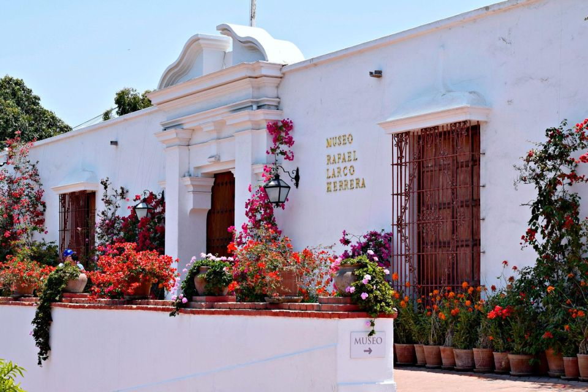

Lima: Museo de Larco Herrera
Precio: $25.00
Ubicación: Ver en Google Maps
Descripción
El Museo de Larco Herrera es una visita obligada para los amantes de la historia y la arqueología. Ubicado en el distrito de Pueblo Libre en Lima, este museo alberga una impresionante colección de arte precolombino, incluyendo cerámicas, textiles, joyas y artefactos de la antigua civilización peruana.
Detalles de la Actividad
- Horario: Abierto de lunes a domingo de 9:00 a.m. a 10:00 p.m.
- Recorrido guiado disponible en varios idiomas.
- Incluye acceso a todas las exhibiciones y áreas del museo.
Información Adicional
Para obtener más información sobre las tarifas de entrada y reservas de tours guiados, visite el sitio web oficial del Museo de Larco Herrera.